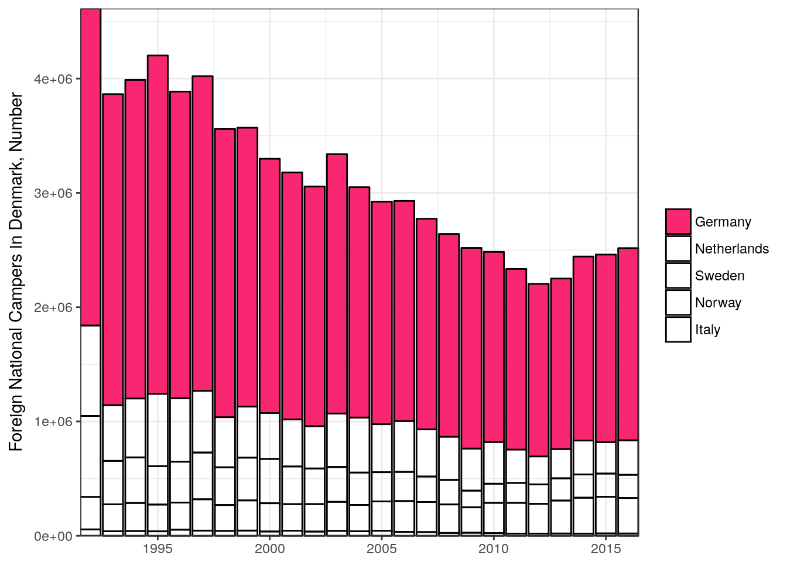

df_tables <- dkstat::dst_get_tables(lang = "en")
knitr::kable(df_tables[1:n_table,])| id | text | unit | updated | firstPeriod | latestPeriod | active | variables |
|---|---|---|---|---|---|---|---|
| FOLK1A | Population at the first day of the quarter | number | 2017-05-11T09:00:00 | 2008Q1 | 2017Q2 | TRUE | region,sex,age,marital status,time |
| FOLK1B | Population at the first day of the quarter | number | 2017-05-11T09:00:00 | 2008Q1 | 2017Q2 | TRUE | region,sex,age,citizenship,time |
| FOLK1C | Population at the first day of the quarter | number | 2017-05-11T09:00:00 | 2008Q1 | 2017Q2 | TRUE | region,sex,age,ancestry,country of origin,time |
| FOLK1D | Population at the first day of the quarter | number | 2017-05-11T09:00:00 | 2008Q1 | 2017Q2 | TRUE | region,sex,age,citizenship,time |
| FOLK1E | Population at the first day of the quarter | number | 2017-05-11T09:00:00 | 2008Q1 | 2017Q2 | TRUE | region,sex,age,ancestry,time |
## write.table(df_tables, file = "~/Downloads/databank-tables.tsv", sep = "\t", row.names = FALSE)table <- "camp1"
folk1_meta <- dkstat::dst_meta(table = table, lang = "en")
my_query <-
list(
OMRÅDE = "All Denmark",
NATION1 = "*",
OVERNAT1 = "Nights stay",
PERIODE = "Whole year",
Tid = "*"
)
df_data <- dkstat::dst_get_data(table = table, query = my_query, lang = "en")
## head(df_data)
## str(df_data)
knitr::kable(df_data[1:n_table, ])| OMRÅDE | NATION1 | OVERNAT1 | PERIODE | TID | value |
|---|---|---|---|---|---|
| All Denmark | Total | Nights stay | Whole year | 1992-01-01 | 13083768 |
| All Denmark | Total | Nights stay | Whole year | 1993-01-01 | 11792034 |
| All Denmark | Total | Nights stay | Whole year | 1994-01-01 | 11955208 |
| All Denmark | Total | Nights stay | Whole year | 1995-01-01 | 12392260 |
| All Denmark | Total | Nights stay | Whole year | 1996-01-01 | 11677936 |
library(ggplot2)
## table(df_data$NATION1)
## nations <- sample(unique(df_data$NATION1), 5)
df_bottom <-
df_data %>%
filter(!NATION1 %in% c("Total", "Denmark", "World outside Denmark")) %>%
group_by(NATION1) %>%
summarize(SUM = sum(value)) %>%
arrange(-SUM) # %>%
## head(10)
df_plot <-
df_data %>%
filter(!TID == "2017-01-01")
## head(df_data)
## head(df_plot)
df_plot$NATION1 <- factor(df_plot$NATION1,
## levels = rev(as.character(df_bottom$NATION1))
levels = as.character(df_bottom$NATION1)
)
## number of countries
m <- 5
p <-
df_plot %>%
filter(NATION1 %in% df_bottom$NATION1[1:m]) %>%
ggplot(aes(x = TID, y = value, fill = NATION1)) +
geom_bar(stat = "identity", color = "black") +
scale_x_date(name = NULL, expand = c(0,0)) +
scale_y_continuous(name = "Foreign National Campers in Denmark, Number",
expand = c(0,0)) +
guides(fill = guide_legend(title = NULL)) +
theme_bw() +
scale_fill_manual(values = c("#F92672", rep("transparent", m)))
p